Print & decorating consulting
Container and industrial screen printing, pad printing, hot stamping, inkjet, production troubleshooting, and print feasibility support.
- At your facility or ours
- Artwork and material review
- Process improvement and quoting support